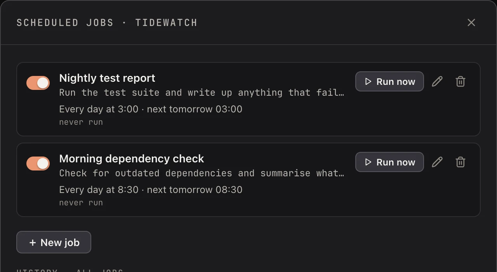
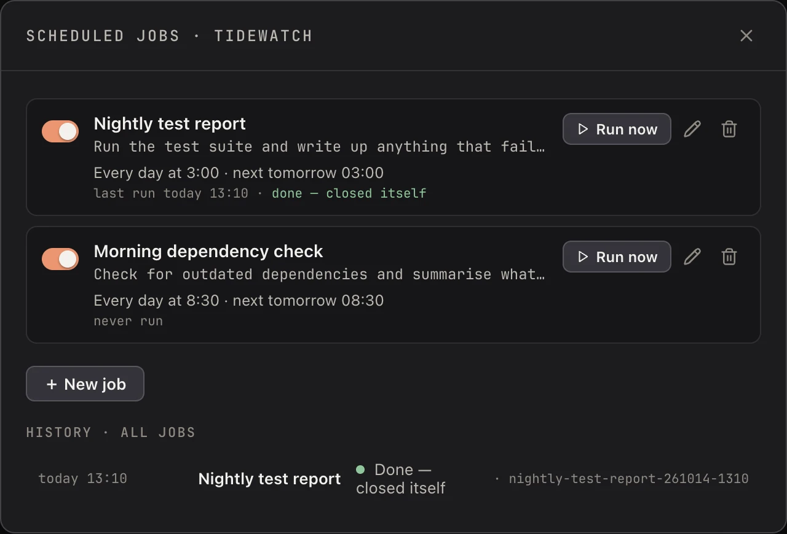

Sessions on a timer
Some agent work should just happen: run the tests every night, check for old packages every morning. You should not have to be there to start it. Koloft starts a fresh session on a timer, hands it the first message you wrote, and leaves the rest to you. When a run finishes, it waits in the sidebar for you, unless the job says When done ▸ Close it. Then the run cleans up after itself.
Set up a job
Right-click a folder in the sidebar and pick Scheduled jobs… from the menu. Each job starts a Claude Code, Codex, Muse Code or Antigravity session; the Runs in row lists the agents you have on, and a remote folder gets the same list. For each one you choose:
-
a name, and what to run: any message, or a skill's
/name. A run's row in the sidebar shows the job's name (for Antigravity, in a folder on your Mac). - when: every so many minutes or hours, every day at a time, on the days you pick, once on a day and time, or a set wait after each run (see below)
-
the model, and how hard it thinks. For Claude Code, Codex and Antigravity, pick a model
from a short list, or type another under
Other…. For Muse, keepDefaultor type a name underOther…. Antigravity shows only the thinking levels its model takes. - the permission it gets
- when it is done: Leave it open (the default), or Close it
| permission | what it means |
|---|---|
| Same as my other sessions | Follows your Accounts setting. A job skips every check when Skip permission prompts is on in Settings ▸ Accounts and Koloft runs it on one of your accounts. If not, it asks before risky steps, like your other sessions; a Codex job follows Codex's own approval settings. |
| Let it edit files without asking | It may change files without asking. |
| Never ask | It never asks. It can change files anywhere on this Mac, not only in the run's folder. |

An agent can manage jobs too, with koloft cron. See
Agents can use Koloft too.
Once, and after each run
The When row has five choices. Two of them do not follow the clock:
| when | what happens |
|---|---|
| Once | Pick a day and a time. At that time one run starts and the job turns itself off. It stays in the list; give it a new time and it is on again. If that time is missed or skipped (see History below), no run happens, and the job still turns itself off. |
| After each run… | Pick a wait, in minutes or hours. The wait starts when the last run's tab is gone (it closed itself, you closed it, or it could not start); then the next run starts. While a run is open, nothing new starts, Run now included. Saving the job or turning it on starts the wait again. It is never missed: if the wait ran out while Koloft was closed or asleep, the run starts as soon as Koloft is back. |
Picking After each run… sets When done to Close it, so each run makes room for the next by
itself. The list says waits for the open run to end while a run is open. In a
remote folder, while the link is down a run's tab keeps trying to
reconnect, and the run stays open. A run whose agent quits with an error keeps its tab and
its last screen, like any session, but the run counts as
over at once, so the wait starts.
Where it runs
Git is the tool that keeps a history of your files. A worktree is a new copy of the folder, on its own branch, so your own files are never touched. When a run's tab closes, Koloft removes its copy and branch, unless they hold work not committed, or a commit that is nowhere else. The run's row stays in the sidebar, greyed; a click makes the copy again and resumes the same session. Copies left by older runs go the next time Koloft opens.
the time comes
|
v
does git track the folder?
| |
yes no
| |
v v
new worktree, session in the
session in it folder itself
When it is done
The job's When done row has two choices:
| when done | what happens |
|---|---|
| Leave it open | The default. The run stays in the sidebar for you to read. |
| Close it | Once the run has finished all its work, its tab, row, worktree and branch go, so the next run is not skipped. |
In a folder git does not track, only the tab and the row go; nothing on disk is touched.
A job set to Close it says "closes when done" in the list. When its run closes, a small message pops up: "⏰ name finished and closed".

A run stays open, and says why, when:
- it stops to ask you something, such as asking for your OK
- it still has work running
- closing it would lose a change that is not committed, or a commit
- a file in its Workbench is not saved
History, at the bottom of the window, lists every job's runs, newest first (History · all jobs). Each line shows when it ran, then the job's name, then what happened. Click a job's
name on its card: the card is highlighted and History shows that job alone (History · <job>). Click it again to see all jobs. A line there reads one of:
| history line | what it means |
|---|---|
| Done — waiting for you | The run finished and is still open in the sidebar. |
| Done — closing | The run finished, and Close it is cleaning it up right now. |
| Done — still finishing | The run's turn is over, but work it started still runs in the background. Close it cleans up once that work is over; Koloft looks again every minute. |
| Done — closed itself | The run finished and Close it cleaned it up. |
| Done — not closed: what is left | The run finished, but something keeps it open. The line says what. Koloft looks again a little later. |
| Closed by you |
You closed the run yourself. The line then ends with
· folder removed, or · folder kept: … and what is left
in it.
|
| Ended — Koloft quit | Koloft quit while the run was open, and the run did not come back as the job's open run. |
| Missed — Koloft was closed or asleep | The time came while Koloft was closed, or while the Mac slept more than five minutes past it. |
| Skipped — the last run was still open | The time came, but the last run was still in the sidebar. |
| Could not start — why | The run never began. The line says why. |
When a run is missed or skipped more than once in a row, the line says how many times, such as "Missed 3 times — Koloft was closed or asleep".
If you quit Koloft while a run that had started working is open and awake (not asleep), its tab comes back when Koloft opens. It still counts as the job's open run, so the next time is skipped until it closes. A Close it run that had finished closes itself about a minute later; one cut off mid-work stays open for you.
Close it works the same for a Claude, Codex or Muse job, on this Mac and in a
remote folder. On a remote machine, Koloft cannot see programs
the run left going in the background. The run's copy there goes once its session has left
the machine; otherwise the line says folder kept: machine unreachable or
still running on the machine.
What it never does
-
type into your session(it hands the first message to the agent once, as the session starts, and nothing after that) -
run a missed time later(Jobs run only while Koloft is open. A time that came while Koloft was closed is missed, even by a minute. If the Mac was asleep, a run up to five minutes late still happens; later than that, it is missed. After each run… jobs do not follow the clock: see above.) -
pile up runs(if the last run is still open, the next one is skipped, and an After each run… job waits; a run that closed itself is not in the way)
Next page → Several accounts, one pool